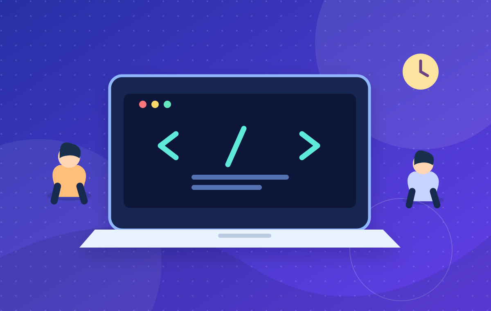

كل تجربة تبدأ بفرصة جديدة
اكتشف ما يجعل
اكتشف ما يجعل
أيامك الجامعية
أكثر إلهاماً.
ورش، لقاءات، تحديات وتجارب تستحق المشاركة. كل الفعاليات في مكان واحد، مصمّم ليسهّل عليك اكتشاف ما يناسب اهتماماتك.
مدامساحة افتراضية لأفكار وأنشطة الطلاب

✦
فعاليات تلهمكفي مجالات متنوعة
13فعالية تجريبية
8مجالات متنوعة
5صفحات مترابطة
∞فرص للاكتشاف
✦ اخترناها لك
فعاليات بارزة هذا الأسبوع
مجموعة مختارة من الأنشطة القادمة التي تستحق أن تكون ضمن خطتك.
✳ ابحث بشغفك
عرض كل التصنيفات ↗كل اهتماماتك تحت سقف واحد
اختر المجال الأقرب إليك، وانطلق نحو التجربة التالية.
✦ في الأفق
استعراض جميع الفعاليات ↗أحدث الفعاليات المضافة
اكتشف تجارب جديدة واكتب فصلًا مختلفًا في أيامك.
الأمر في غاية البساطة
ثلاث خطوات لتصل إلى الفعالية المناسبة
01
تصفّح
استعرض البطاقات وابحث حسب المجال أو التاريخ أو المكان.
02
اكتشف
افتح صفحة أي فعالية لتعرف تفاصيلها وبرنامجها.
03
خطّط
أضف الموعد إلى تقويمك أو شارك الرابط مع زملائك.
من يقف خلف مَدار؟
تعرف على الفريق ↗فريق المشروع
الأسماء والمُعرّفات الخاصة بالمشاركين في المشروع الجامعي.
ولاء الحايكwalaa_114094 • C1
هل لديك فكرة لفعالية قادمة؟
تواصل معنا ↗